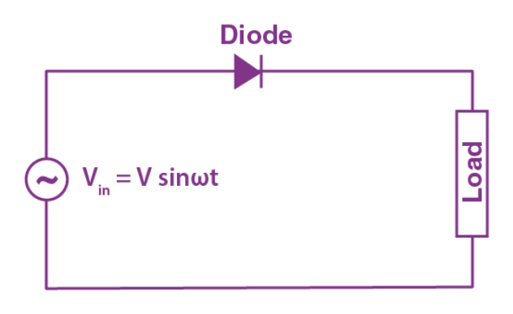
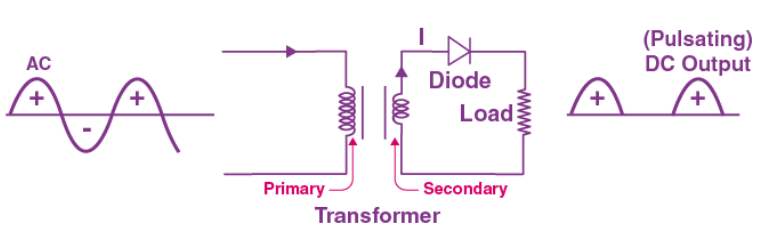
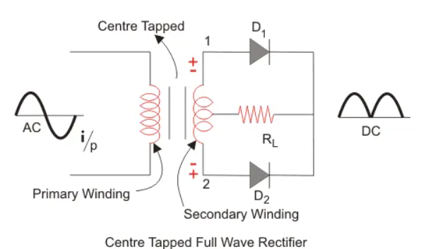
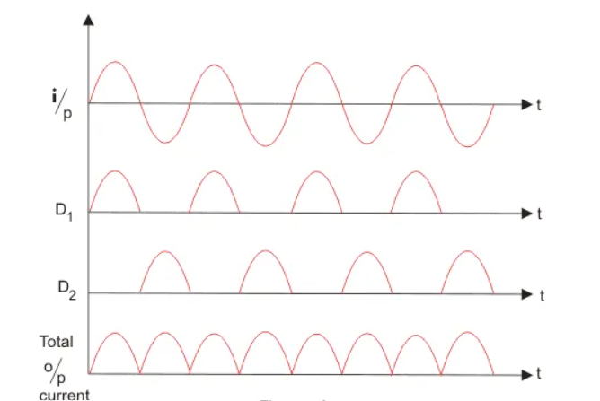

Rectification is the process of turning an alternating current waveform into a direct current waveform, i.e.,
creating a
new signal that has only a single polarity.
The concept of rectification is crucial to the operation of modern electronic circuits. Most electronic devices
such as
a TV or computer require a fixed, unchanging DC voltage to power their internal circuitry. In contrast,
residential and
commercial power distribution is normally AC. Consequently, some form of AC to DC conversion is required
Rectifier:
A rectifier is a device that converts an oscillating two-directional alternating current (AC) into a
single-directional
direct current (DC). Rectifiers can take a wide variety of physical forms, from vacuum tube diodes and crystal
radio
receivers to modern silicon-based designs.
Half Wave Rectifier:
Half-wave rectifiers transform AC voltage to DC voltage.
A halfwave rectifier circuit uses only one diode for the transformation. A halfwave rectifier is defined as a
type of
rectifier that allows only one-half cycle of an AC voltage waveform to pass while blocking the other half cycle.
A half-wave rectifier is the simplest form of the rectifier and requires only one diode for the construction of
a
halfwave rectifier circuit.
A halfwave rectifier circuit consists of three main components as follows:
A diode
A transformer
A transformer

Working of half wave rectifier:
A high AC voltage is applied to the primary side of the step-down transformer. The obtained secondary
low voltage is
applied to the diode.
The diode is forward biased during the positive half cycle of the AC voltage and reverse biased during
the negative half
cycle.
The final output voltage waveform is as shown in the figure below:

Full Wave Rectifier:
A full wave rectifier is defined as a rectifier that converts the complete cycle of alternating current into
pulsating
DC.
Unlike halfwave rectifiers that utilize only the halfwave of the input AC cycle, full wave rectifiers utilize
the full
cycle. The lower efficiency of the half wave rectifier can be overcome by the full wave rectifier.
We can further classify full wave rectifiers into:
Centre-tapped Full Wave Rectifier
A centre-tapped full-wave rectifier system consists of:
Centre-tapped Transformer
Two Diodes
Resistive Load


Full Wave Bridge Rectifier
A full wave bridge rectifier is a rectifier that will use four diodes or more than that in a bridge
formation. A full
wave bridge rectifier system consists of: